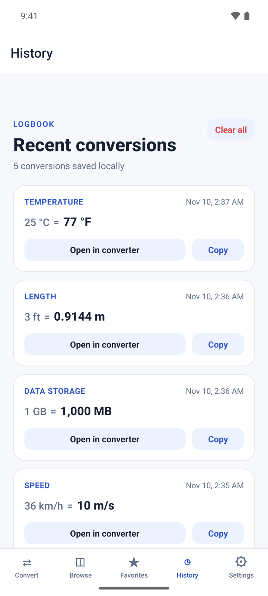

Fungsi aplikasi
Unit Converter menukar sesuatu sukatan daripada satu unit kepada unit lain. Taip nilai, pilih dua unit dan hasilnya terpapar semasa anda menaip. Ia merangkumi 15 kategori, daripada panjang, berat dan suhu hingga sukatan masakan, penggunaan bahan api dan storan data.
- Penukaran berjalan pada peranti anda dan berfungsi tanpa internet.
- Tiada akaun. Kegemaran dan sejarah anda kekal dalam telefon anda.
- Menukar cawan dan sudu kepada gram untuk 20 bahan biasa. Keputusan ini adalah anggaran.
- Percuma dengan iklan sepanduk kecil pada Browse dan History sahaja. Pembelian Premium sekali bayar membuang iklan tersebut.
Mula menggunakan
- Buka Unit Converter. Ia bermula pada Convert dengan kategori Length.
- Taip nombor di bawah VALUE. Jawapan terus terpapar di bawah RESULT.
- Tiada apa-apa yang perlu dibenarkan: aplikasi ini tidak menggunakan kamera, lokasi atau fail anda.

Tukar nilai
- Pada Convert, ketik CATEGORY dan pilih satu kategori, contohnya Temperature.
- Ketik FROM dan pilih unit yang anda ada. Ketik TO dan pilih unit yang anda mahu.
- Taip nombor di bawah VALUE. Gunakan titik atau koma untuk perpuluhan, dan jangan guna pemisah ribuan: taip 1500, bukan 1,500.
- Baca jawapan di bawah RESULT.
- Ketik ⇄ untuk menukar kedudukan dua unit, atau Clear untuk mengosongkan nilai.

Salin keputusan
- Ketik Copy result. Butang bertukar kepada Copied.
- Tampalkan dalam mana-mana aplikasi. Teks yang disalin mengandungi kedua-dua belah, contohnya "5 mi = 8.04672 km".
Setiap keputusan yang anda salin turut disimpan dalam History.
Layari kategori
- Ketik Browse untuk melihat kesemua 15 kategori dan bilangan unit dalam setiap satu.
- Taip dalam kotak carian untuk mencari kategori atau unit mengikut nama atau simbolnya, contohnya "Speed" atau "mph".
- Ketik satu kategori untuk membukanya dalam penukar.

Simpan kategori kegemaran anda
- Pada Convert, pilih satu kategori dan ketik ☆ Save. Butang bertukar kepada ★ Saved.
- Ketik Favorites untuk melihat kategori yang anda simpan.
- Ketik Convert now → pada sesuatu kad untuk membuka kategori itu dalam penukar.
- Untuk membuang kegemaran, ketik ★ pada kadnya.

Guna semula penukaran lalu
- Ketik History. Ia menyenaraikan keputusan yang anda salin, yang terbaru dahulu. 100 yang terkini disimpan.
- Ketik Open in converter untuk memuatkan semula kategori, unit dan nilai yang sama.
- Ketik Copy untuk menyalin baris itu sekali lagi.
- Untuk mengosongkan senarai, ketik Clear all kemudian Clear.

Tukar tema
- Ketik Settings.
- Di bawah Appearance, pilih System, Light atau Dark. System mengikut tetapan telefon anda.

Tukar bahasa
- Ketik Settings.
- Buka tetapan bahasa dan pilih satu bahasa. Pilihan pertama, System default, mengikut bahasa telefon anda.
Nama kategori, unit dan bahan berubah mengikut bahasa. Carian dalam Browse menemui nama dalam bahasa anda dan dalam bahasa Inggeris.
Premium
Premium ialah satu bayaran, bukan langganan. Ia membuang semua iklan dan tidak menambah apa-apa lagi: setiap kategori dan unit adalah percuma.
- Buka Settings dan ketik Remove ads di bawah Premium. Butang itu menunjukkan harganya.
- Jika anda pernah membeli Premium, ketik Restore purchase.
Soalan
Adakah ia berfungsi tanpa internet? Ya. Semua penukaran berjalan dalam telefon anda. Hanya iklan dan pembelian Premium memerlukan internet.
Mengapa penukaran saya tiada dalam History? History hanya menyimpan keputusan yang anda salin. Ketik Copy result pada Convert untuk menyimpannya.
Mengapa keputusan memaparkan "Enter a valid number"? Nilai itu mengandungi sesuatu yang tidak dapat dibaca sebagai nombor oleh aplikasi, seperti dua titik perpuluhan. Taip digit dengan paling banyak satu titik atau koma.
Adakah bulan dan tahun tepat? Tidak. Dalam Time, bulan dan tahun menggunakan purata panjang kalendar, dan keputusan memaparkan nota apabila anda menggunakannya.
Bolehkah ia menukar mata wang? Tidak. Aplikasi ini hanya menukar unit sukatan.
Privasi
Penukaran berjalan pada peranti anda, dan kegemaran serta sejarah anda kekal dalam telefon anda. Versi percuma memaparkan iklan sepanduk daripada Google AdMob. Baca dasar privasi yang penuh.